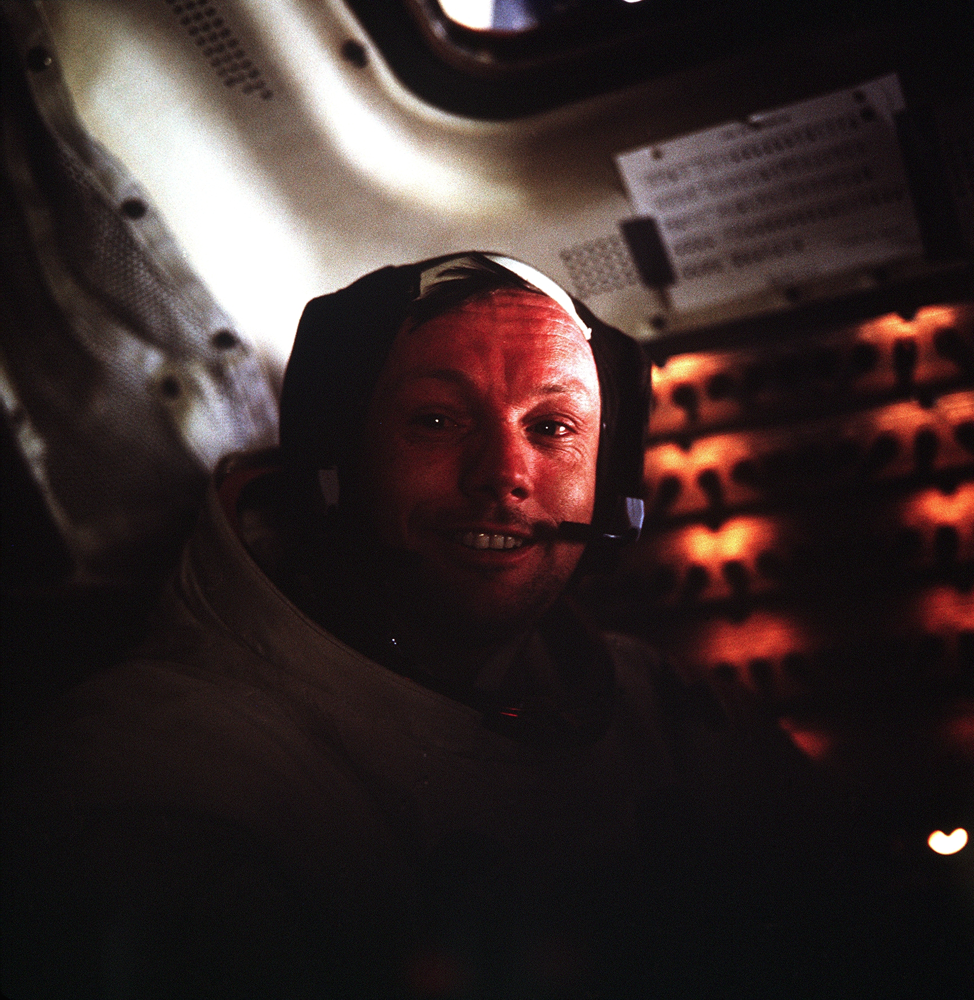
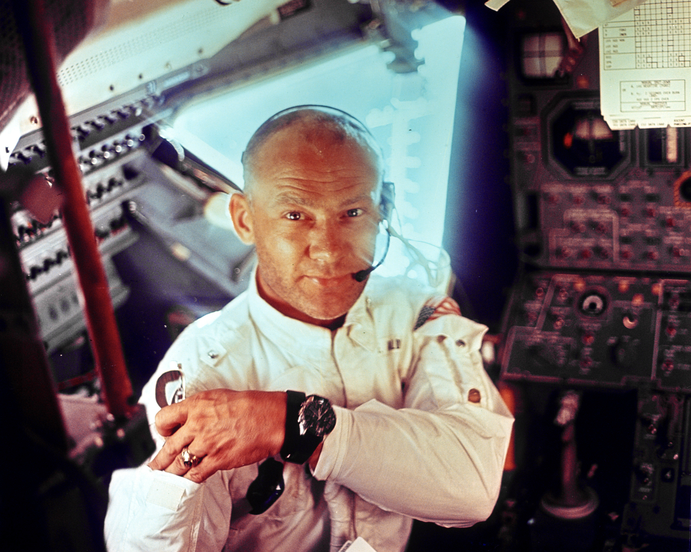
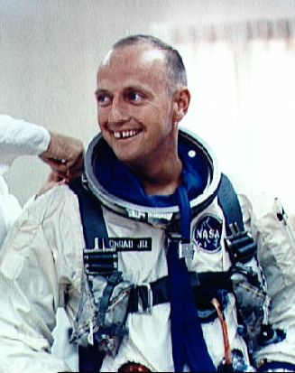
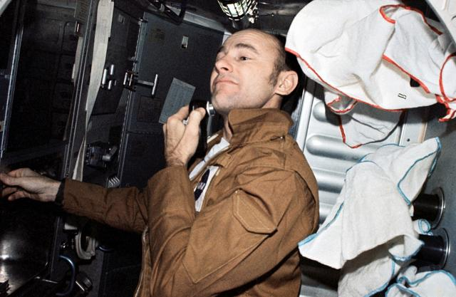
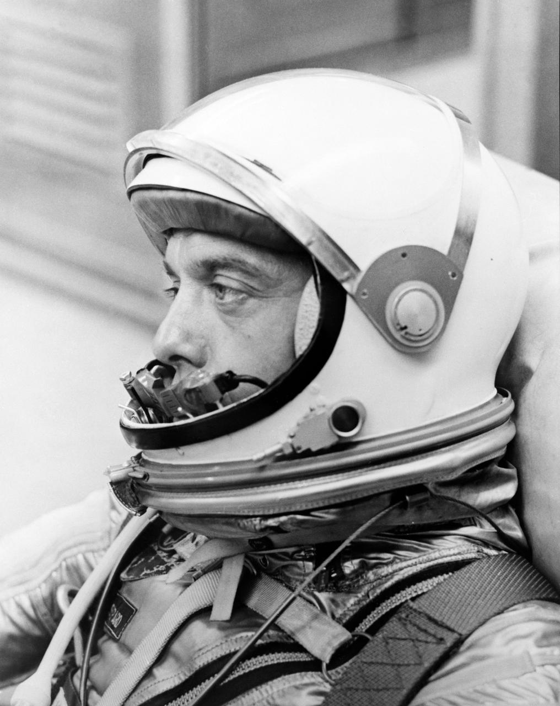

Portada
Biografías
Presentación
Enlaces
Los doces astronautas que pisaron la Luna

Neil Armstrong
+ seguir leyendo

Buzz Aldrin
+ seguir leyendo

Pete Conrad
+ seguir leyendo

Alan L. Bean
+ seguir leyendo

Alan Shepard
+ seguir leyendo